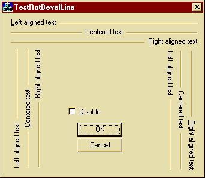

A bevelline with horizontal and vertical text
This article was contributed by Hans
Bühler.
The class described here replaces my former issue "cdxCBevelLine".
This class provides the following options:

Features:
- A bevel line even if user has strange fonts
(have you ever created a sunken static with a height of 1 for a bevelline and tested your
program on a machine that has 200% larger fonts ?).
- Text rotates appropiately (usable with any font).
- Reacts properly on WM_ENABLEWINDOW.
- Might be used as an example for my cdxCRot90DC (which you may find in the misc section
of codeguru's).
How to use (in a dialog):
- Add cdxCRotBevelLine.h, cdxCRotBevelLine.cpp, cdxCRot90DC.h and cdxCRot90DC.cpp to your
project.
- Add a static control to your dialog resource.
Enter some appropiate text to it.
If your static's width is greater than its height the bevelline will appear horizontal,
vertical otherwise.
If the bevelline is drawn vertically, the text is rotated by 90° degrees by default (left
hand examples of upper image).
To modify this, put a "~" in front of your control text (right hand bevels in
the upper image).
- Change its ID to something like IDC_BEVEL_1, open classwizard and assign a member
variable, type control (CStatic) to it ("m_wndBevel1" for example).
- Open your dialog class' header file.
Add #include "cdxCRotBevelLine.h".
Find the line "CStatic m_wndBevel1;" and replace the "CStatic" by
"cdxCRotBevelLine".
- Compile and run.
Notes:
- This class may even be useful to you if you only need horizontal bevels.
Some people mentioned that it's enough to create a sunken static with a height of 1 (use
Alt while sizing the control) and to put another text control over it.
In fact, this will look really strange if the user choosed big fonts
for his display - the dialog resource will automatically adapt the the newly found font
and your height of 1 may become 3 or stuff - and suddenly friend user doesn't have a
bevelline but a sunken static.
Files:
Download demo project - [size in
KB] KB
Download source - [size in KB] KB
Date Posted: August 11, 1998